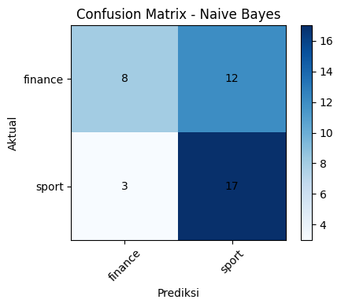

Skip-gram Manual (Jaringan Saraf Tiruan) + Klasifikasi Naive Bayes#
Notebook ini membangun Skip-gram dari nol (tanpa gensim), lengkap dengan:
Preprocessing teks berita (cleaning + tokenisasi)
Pembuatan pasangan (target, context) dari window Skip-gram
One-hot encoding untuk tiap pasangan ->
X[i]= one-hot kata target,Y[i]= one-hot kata contextArsitektur jaringan saraf tiruan manual:
Matrix bobot input -> hidden
W1berukuran (vocab_size x 3) -> hidden layer 3 neuron (dimensi embedding)Matrix bobot hidden -> output
W2berukuran (3 x vocab_size) -> output = probabilitas tiap kata di vocabulary (softmax)Forward pass, cross-entropy loss, backpropagation manual (tanpa autograd), update bobot dengan gradient descent
Ekstraksi word embedding dari
W1hasil trainingKlasifikasi Naive Bayes: representasi dokumen = rata-rata vektor kata (embedding) penyusunnya, lalu diklasifikasikan dengan
GaussianNBke label berita (mis. sport vs finance)
Catatan: karena tidak ada file dataset yang diunggah, kode ini memakai struktur data yang sama dengan notebook sebelumnya (
../data/dataset_berita_200.xlsx, kolomid,isi_berita, danlabel). Sesuaikan nama kolom/path bila berbeda di dataset Anda.
import pandas as pd
import numpy as np
import re
import matplotlib.pyplot as plt
np.random.seed(42)
1. Load Data & Preprocessing#
df = pd.read_excel("../data/dataset_berita_200.xlsx")
# Jika dataset punya kolom kategori, dipakai langsung.
# Jika belum ada, isi manual seperti contoh di bawah (silakan sesuaikan).
if "label" not in df.columns:
df["label"] = "tidak_diketahui"
print(df[["id", "label"]].head())
print("Jumlah dokumen:", len(df))
print("Distribusi kategori:")
print(df["label"].value_counts())
id label
0 1 sport
1 2 sport
2 3 sport
3 4 sport
4 5 sport
Jumlah dokumen: 200
Distribusi kategori:
label
sport 100
finance 100
Name: count, dtype: int64
def bersihkan_ringan(teks):
teks = str(teks).lower()
teks = re.sub(r"[^a-z\s]", " ", teks)
teks = re.sub(r"\s+", " ", teks).strip()
return teks
def tokenisasi(teks):
return bersihkan_ringan(teks).split()
# Tokenisasi seluruh dokumen (dipakai untuk training skip-gram DAN untuk fitur klasifikasi)
df["tokens"] = df["isi_berita"].apply(tokenisasi)
df = df[df["tokens"].map(len) > 0].reset_index(drop=True)
print(df[["id", "label", "tokens"]].head())
id label tokens
0 1 sport [chef, de, mission, cdm, indonesia, todotua, p...
1 2 sport [banjir, besar, melanda, nagoya, jepang, menje...
2 3 sport [ketua, umum, komite, olimpiade, indonesia, ko...
3 4 sport [persaingan, titel, juara, dunia, semakin, ket...
4 5 sport [sektor, ganda, campuran, kembali, mengalami, ...
2. Vocabulary & One-Hot Encoding#
semua_kalimat_token = df["tokens"].tolist()
vocab = sorted(set(kata for kalimat in semua_kalimat_token for kata in kalimat))
vocab_size = len(vocab)
word2idx = {kata: i for i, kata in enumerate(vocab)}
idx2word = {i: kata for kata, i in word2idx.items()}
print(f"Ukuran vocabulary: {vocab_size} kata")
def one_hot(idx, size=vocab_size):
"""Membuat vektor one-hot berdimensi `size` dengan 1 di posisi idx."""
vek = np.zeros(size)
vek[idx] = 1.0
return vek
Ukuran vocabulary: 7439 kata
3. Pasangan (Target, Context) -> X (target) & Y (context)#
Untuk tiap kata target dalam kalimat, kata-kata di sekitarnya dalam window dijadikan context.
Setiap pasangan diubah menjadi vektor one-hot: X[i] = one-hot target, Y[i] = one-hot context.
def buat_pasangan_skipgram(tokens, window=2):
pasangan = []
for i, target in enumerate(tokens):
mulai = max(0, i - window)
akhir = min(len(tokens), i + window + 1)
for j in range(mulai, akhir):
if j != i:
pasangan.append((target, tokens[j]))
return pasangan
WINDOW = 2
pasangan_kata = []
for tokens in semua_kalimat_token:
pasangan_kata += buat_pasangan_skipgram(tokens, window=WINDOW)
print(f"Total pasangan (target, context): {len(pasangan_kata)}")
print("Contoh 5 pasangan pertama:", pasangan_kata[:5])
Total pasangan (target, context): 260500
Contoh 5 pasangan pertama: [('chef', 'de'), ('chef', 'mission'), ('de', 'chef'), ('de', 'mission'), ('de', 'cdm')]
# Ubah setiap pasangan (target, context) kata menjadi indeks
pasangan_idx = [(word2idx[t], word2idx[c]) for t, c in pasangan_kata]
X_idx_semua = np.array([t_idx for t_idx, _ in pasangan_idx]) # indeks target, (N,)
Y_idx_semua = np.array([c_idx for _, c_idx in pasangan_idx]) # indeks context, (N,)
print("Jumlah pasangan:", X_idx_semua.shape[0])
# Demonstrasi bentuk one-hot X[i] (target) dan Y[i] (context) untuk beberapa pasangan pertama.
# CATATAN: one-hot untuk SELURUH pasangan sengaja TIDAK dibuat (X = matrix (260500 x 7439) ~15 GB)
# karena akan sangat boros memori dan tidak dipakai langsung saat training (lihat Bagian 4 & 5,
# training memakai indeks kata agar hemat memori).
N_DEMO = 5
X_demo = np.array([one_hot(t_idx) for t_idx in X_idx_semua[:N_DEMO]])
Y_demo = np.array([one_hot(c_idx) for c_idx in Y_idx_semua[:N_DEMO]])
print("\nContoh bentuk one-hot (5 pasangan pertama):")
print("X_demo shape:", X_demo.shape, "| Y_demo shape:", Y_demo.shape)
print("X_demo[0] (target one-hot):", X_demo[0])
print("Y_demo[0] (context one-hot):", Y_demo[0])
4. Arsitektur Jaringan Saraf Tiruan Skip-gram (Manual)#
Input (one-hot, vocab_size)
| W1 (vocab_size x 3) <- matrix bobot input->hidden
v
Hidden (3 neuron / dimensi embedding)
| W2 (3 x vocab_size) <- matrix bobot hidden->output
v
Output (vocab_size, softmax) <- probabilitas tiap kata jadi context
h = x . W1(karenaxone-hot, ini setara mengambil satu barisW1)u = h . W2y_pred = softmax(u)Loss: cross-entropy antara
y_preddany_true(one-hot context)Backpropagation manual untuk update
W1danW2
import numpy as np
from scipy.sparse import csr_matrix
HIDDEN_DIM = 3
def softmax(u):
u_stabil = u - np.max(u, axis=-1, keepdims=True)
exp_u = np.exp(u_stabil)
return exp_u / np.sum(exp_u, axis=-1, keepdims=True)
def to_onehot_sparse(idx_array, vocab_size):
"""One-hot encoding dalam bentuk sparse matrix."""
N = idx_array.shape[0]
data = np.ones(N, dtype=np.float32)
rows = np.arange(N)
cols = idx_array
return csr_matrix(
(data, (rows, cols)),
shape=(N, vocab_size)
)
class SkipGramManual:
def __init__(
self,
vocab_size,
hidden_dim,
epochs=50,
lr=1.0,
batch_size=256
):
self.vocab_size = vocab_size
self.hidden_dim = hidden_dim
# Konfigurasi training disimpan di dalam model
self.epochs = epochs
self.lr = lr
self.batch_size = batch_size
# Bobot Skip-Gram
self.W1 = np.random.uniform(
-0.5, 0.5,
(vocab_size, hidden_dim)
)
self.W2 = np.random.uniform(
-0.5, 0.5,
(hidden_dim, vocab_size)
)
def forward(self, x_onehot):
h = x_onehot @ self.W1
u = h @ self.W2
y_pred = softmax(u)
return h, u, y_pred
def backward(
self,
x_onehot,
h,
y_pred,
y_onehot
):
N = x_onehot.shape[0]
e = y_pred - y_onehot
e = np.asarray(e)
dW2 = h.T @ e / N
dh = e @ self.W2.T
dW1 = (x_onehot.T @ dh) / N
dW1 = np.asarray(dW1)
self.W1 -= self.lr * dW1
self.W2 -= self.lr * dW2
def loss(self, y_pred, y_onehot):
eps = 1e-9
y_dense = (
np.asarray(y_onehot.todense())
if hasattr(y_onehot, "todense")
else y_onehot
)
return -np.mean(
np.sum(
y_dense * np.log(y_pred + eps),
axis=1
)
)
def train(self, X, Y, verbose_every=5):
history = []
N = X.shape[0]
for epoch in range(1, self.epochs + 1):
idx = np.random.permutation(N)
X_shuf = X[idx]
Y_shuf = Y[idx]
total_loss = 0.0
n_batches = 0
for start in range(
0,
N,
self.batch_size
):
xb_idx = X_shuf[
start:start + self.batch_size
]
yb_idx = Y_shuf[
start:start + self.batch_size
]
xb = to_onehot_sparse(
xb_idx,
self.vocab_size
)
yb = to_onehot_sparse(
yb_idx,
self.vocab_size
)
h, u, y_pred = self.forward(xb)
total_loss += self.loss(
y_pred,
yb
)
n_batches += 1
self.backward(
xb,
h,
y_pred,
yb
)
avg_loss = total_loss / n_batches
history.append(avg_loss)
if (
epoch % verbose_every == 0
or epoch == 1
):
print(
f"Epoch {epoch:4d} | "
f"loss: {avg_loss:.4f}"
)
return history
WINDOW = 2
X_list, Y_list = [], []
for sent in tokenized_corpus:
idxs = [
word2idx[w]
for w in sent
if w in word2idx
]
for i, center in enumerate(idxs):
start = max(0, i - WINDOW)
end = min(
len(idxs),
i + WINDOW + 1
)
for j in range(start, end):
if j != i:
X_list.append(center)
Y_list.append(idxs[j])
X_idx = np.array(
X_list,
dtype=np.int32
)
Y_idx = np.array(
Y_list,
dtype=np.int32
)
print("Jumlah pasangan:", X_idx.shape[0])
Jumlah pasangan: 260500
model_sg = SkipGramManual(
vocab_size=vocab_size,
hidden_dim=HIDDEN_DIM,
epochs=100, # dinaikkan dari 20 -> 100 supaya loss lebih konvergen
lr=1.0,
batch_size=256
)
history = model_sg.train(
X_idx,
Y_idx,
verbose_every=10
)
5. Ekstraksi Word Embedding#
Setelah training, W1 (bobot input->hidden) menjadi tabel embedding kata: setiap baris ke-i adalah vektor 3 dimensi untuk kata dengan indeks i.
embedding_matrix = model_sg.W1 # (vocab_size x HIDDEN_DIM)
kata_contoh = vocab[0]
print(f"Vektor kata '{kata_contoh}':", np.round(embedding_matrix[word2idx[kata_contoh]], 4))
def vektor_kata(kata):
return embedding_matrix[word2idx[kata]] if kata in word2idx else np.zeros(HIDDEN_DIM)
Vektor kata 'a': [ 0.3877 0.298 -0.0608]
6. Klasifikasi Naive Bayes#
Representasi tiap dokumen = rata-rata vektor embedding dari kata-kata penyusunnya (dari W1 hasil training Skip-gram manual). Fitur ini lalu dipakai untuk melatih Gaussian Naive Bayes memprediksi kategori berita.
def simple_preprocess(text):
text = text.lower()
text = re.sub(r"[^a-z\s]", " ", text)
text = re.sub(r"\s+", " ", text).strip()
return text.split()
# bikin kolom tokens LANGSUNG di df, supaya urutan baris tetap sejajar dengan label
df["tokens"] = df["isi_berita"].astype(str).apply(simple_preprocess)
print(df[["isi_berita", "tokens", "label"]].head())
print("Jumlah baris df:", len(df))
isi_berita \
0 Chef de Mission (CdM) Indonesia Todotua Pasari...
1 Banjir besar melanda Nagoya, Jepang, menjelang...
2 Ketua Umum Komite Olimpiade Indonesia (KOI) Ra...
3 Persaingan titel juara dunia semakin ketat men...
4 Sektor ganda campuran kembali mengalami peromb...
tokens label
0 [chef, de, mission, cdm, indonesia, todotua, p... sport
1 [banjir, besar, melanda, nagoya, jepang, menje... sport
2 [ketua, umum, komite, olimpiade, indonesia, ko... sport
3 [persaingan, titel, juara, dunia, semakin, ket... sport
4 [sektor, ganda, campuran, kembali, mengalami, ... sport
Jumlah baris df: 200
def dokumen_ke_vektor(tokens):
vek_kata = [vektor_kata(k) for k in tokens if k in word2idx]
if len(vek_kata) == 0:
return np.zeros(HIDDEN_DIM)
return np.mean(vek_kata, axis=0)
df["fitur_embedding"] = df["tokens"].apply(dokumen_ke_vektor)
X_klasifikasi = np.vstack(df["fitur_embedding"].values)
y_klasifikasi = df["label"].values # <-- diganti dari "kategori" jadi "label"
print("Bentuk fitur klasifikasi:", X_klasifikasi.shape)
print("Label unik:", np.unique(y_klasifikasi))
Bentuk fitur klasifikasi: (200, 3)
Label unik: ['finance' 'sport']
from sklearn.model_selection import train_test_split
from sklearn.naive_bayes import GaussianNB
from sklearn.metrics import accuracy_score, classification_report, confusion_matrix
X_train, X_test, y_train, y_test = train_test_split(
X_klasifikasi, y_klasifikasi, test_size=0.2, random_state=42,
stratify=y_klasifikasi if len(np.unique(y_klasifikasi)) > 1 else None
)
nb_model = GaussianNB()
nb_model.fit(X_train, y_train)
y_pred = nb_model.predict(X_test)
print("Akurasi:", accuracy_score(y_test, y_pred))
print()
print(classification_report(y_test, y_pred))
Akurasi: 0.625
precision recall f1-score support
finance 0.73 0.40 0.52 20
sport 0.59 0.85 0.69 20
accuracy 0.62 40
macro avg 0.66 0.62 0.61 40
weighted avg 0.66 0.62 0.61 40
cm = confusion_matrix(y_test, y_pred, labels=nb_model.classes_)
plt.figure(figsize=(5, 4))
plt.imshow(cm, cmap="Blues")
plt.title("Confusion Matrix - Naive Bayes")
plt.colorbar()
plt.xticks(range(len(nb_model.classes_)), nb_model.classes_, rotation=45)
plt.yticks(range(len(nb_model.classes_)), nb_model.classes_)
for i in range(cm.shape[0]):
for j in range(cm.shape[1]):
plt.text(j, i, cm[i, j], ha="center", va="center")
plt.xlabel("Prediksi")
plt.ylabel("Aktual")
plt.tight_layout()
plt.show()

Ringkasan#
Preprocessing: cleaning ringan (lowercase, hapus tanda baca) + tokenisasi seluruh dokumen.
Pasangan Skip-gram: dibentuk dari tiap kata target dan kata-kata di sekitarnya dalam
window, lalu diubah menjadi vektor one-hot ->X(target) danY(context).Jaringan saraf tiruan manual:
W1(vocab_size x 3) sebagai bobot input->hidden danW2(3 x vocab_size) sebagai bobot hidden->output, dilatih dengan forward pass + softmax + cross-entropy loss + backpropagation manual (tanpagensim/framework deep learning).Word embedding: diambil dari
W1hasil training, tiap kata direpresentasikan sebagai vektor 3 dimensi.Klasifikasi: dokumen direpresentasikan sebagai rata-rata vektor kata penyusunnya, lalu diklasifikasikan ke kategori berita menggunakan Gaussian Naive Bayes, dievaluasi dengan akurasi, classification report, dan confusion matrix.